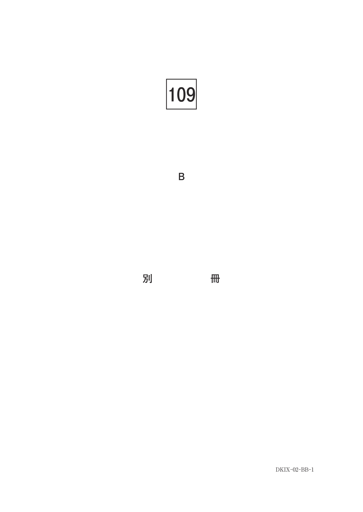
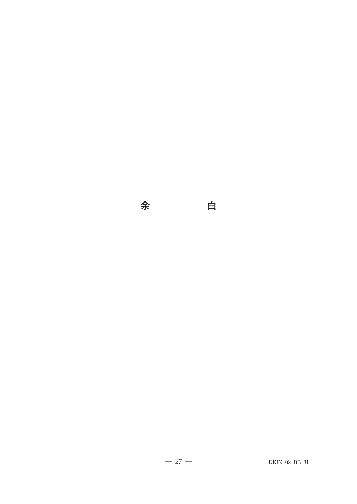
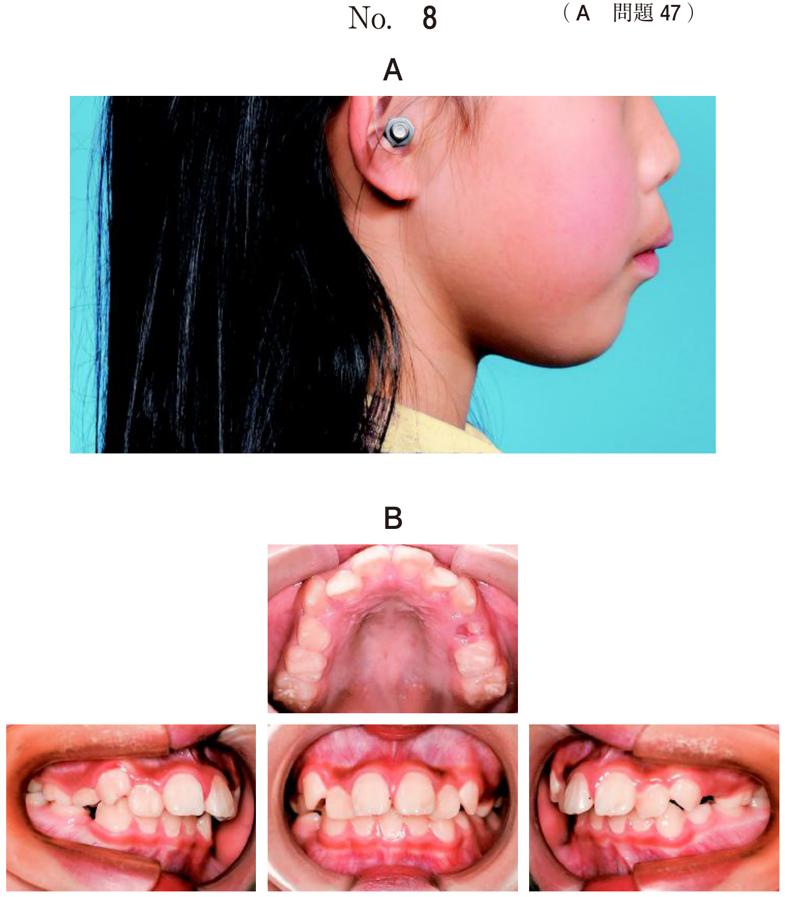
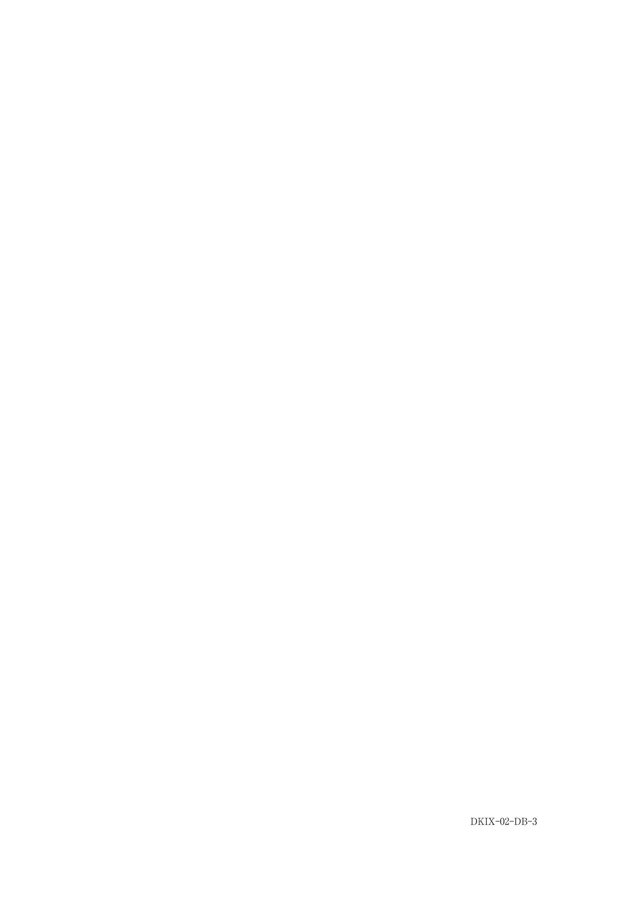
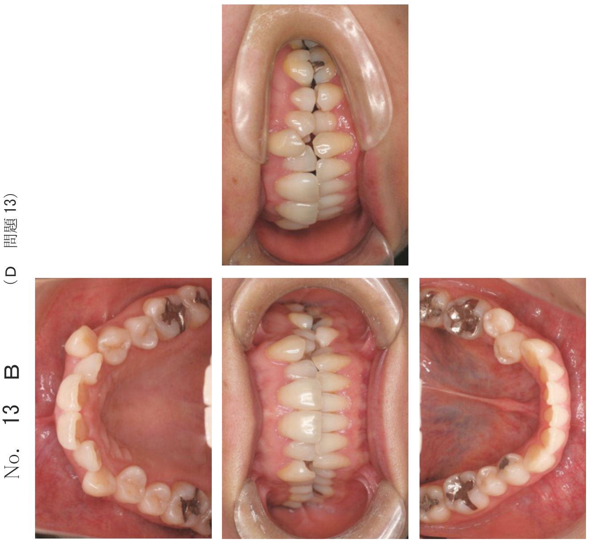
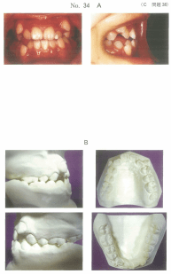

不正咬合の診査
- セファロ分析・骨格性評価：ANB角による骨格性Ⅱ級/Ⅲ級の判定
- 顔貌・側貌の評価：E-line、オトガイ緊張、側貌型（convex/concave）
- エックス線所見：先天欠如、埋伏歯、晩期残存の判読
- 模型分析：ディスクレパンシー、トゥースサイズレイシオ
1. 側貌・顔貌の評価
側貌型の分類
| 分類 | 特徴 | 関連する不正咬合 |
|---|---|---|
| Convex（凸顔型） | 上顎が前方に突出 | 上顎前突、骨格性Ⅱ級 |
| Straight（直顔型） | 上下顎のバランスが良好 | 正常咬合 |
| Concave（凹顔型） | 下顎が前方に突出 | 下顎前突、骨格性Ⅲ級 |
E-line（エステティックライン）
鼻尖とオトガイ部の最突出点を結ぶ線に対する上下口唇の位置で、口唇の突出度を評価する。
- 日本人成人：上下口唇がE-line上またはやや前方
- 上顎前突：上口唇がE-lineより前方に突出
- 下顎前突：下口唇がE-lineより前方に突出
Ｅ−ラインで測定するのはどれか。1つ選べ。
b 顔の対称性
c 上顎突出度
d 上下口唇の突出度
e オトガイの前後的位置
【解説】E-lineは鼻尖とオトガイ部を結ぶ線で、この線に対する上下口唇の突出度を評価する。上顎突出度はAngle of convexityで評価する。
オトガイ部の緊張
上顎前突で口唇閉鎖時にオトガイ筋の緊張（梅干し様のしわ）がみられる。口唇閉鎖不全を代償するために生じる。
10歳の女児。歯並びが悪いことを主訴として来院した。初診時の顔面写真（別冊No.1A）と口腔模型の写真（別冊No.1B）を別に示す。
正しい所見はどれか。2つ選べ。

b オトガイ部の緊張
c Hellmanの歯齢ⅢB期
d コンケイブタイプの側貌
e 遠心階段型のターミナルプレーン
【解説】上顎前突症例。口唇閉鎖時のオトガイ部の緊張と、上顎中切歯の翼状捻転が認められる。側貌はconvex（凸顔型）である。
2. セファロ分析・骨格性評価
主な計測点
| 計測点 | 定義 |
|---|---|
| N（Nasion） | 鼻前頭縫合部の最前点 |
| S（Sella） | トルコ鞍の幾何学的中心点 |
| A点 | 上顎歯槽基底部の最深点 |
| B点 | 下顎歯槽基底部の最深点 |
| Pog（Pogonion） | オトガイ隆起の最突出点 |
| Gn（Gnathion） | 顔面平面と下顎下縁平面の交点 |
主な計測平面
| 平面 | 定義 |
|---|---|
| FH平面 | OrとPoを結んだ線（フランクフルト平面） |
| SN平面 | SとNを結んだ線 |
| 下顎下縁平面 | Meを通る下顎下縁の接線 |
| Y軸 | SとGnを結んだ線 |
骨格性分類（ANB角）
ANB角 = SNA角 − SNB角で上下顎の前後的位置関係を判定する。
| 分類 | ANB角 | 特徴 |
|---|---|---|
| 骨格性Ⅰ級 | 2〜4° | 上下顎の位置関係が正常 |
| 骨格性Ⅱ級 | 4°より大 | 上顎前突傾向 |
| 骨格性Ⅲ級 | 2°より小（負） | 下顎前突傾向 |
垂直的顔面パターン
| 分類 | 下顎下縁平面角 | 特徴 |
|---|---|---|
| ハイアングル | 大きい | 長顔型、開咬傾向、Y軸角大 |
| ローアングル | 小さい | 短顔型、過蓋咬合傾向 |
19歳の女性。食物がうまく噛めないことを主訴として来院した。開口障害を認める。初診時の顔面写真（別冊No.31A）、エックス線写真（別冊No.31B）及び口腔内写真（別冊No.31C）を別に示す。セファロ分析の結果を図に示す。
正しい所見はどれか。2つ選べ。

b 上顎骨の過成長
c 下顎骨の劣成長
d 下顎中切歯の舌側傾斜
e コンケイブタイプの側貌
【解説】開咬を伴う骨格性Ⅱ級症例。セファロ分析でSNB角の減少（下顎骨の劣成長）と上気道の狭窄が認められる。側貌はconvex型である。
16歳の女子。初診時の口腔内写真（別冊No.12A）とエックス線画像（別冊No.12B）を別に示す。セファロ分析の結果を図に示す。
正しい所見はどれか。2つ選べ。

b ローアングル
c AngleⅡ級1類
d 骨格性上顎前突
e 負のtotal discrepancy
【解説】下顎歯列に鞍状歯列弓（小臼歯部が舌側に転位）が認められる。叢生があり負のtotal discrepancyを示す。セファロでは骨格性分類に異常なく、ローアングルでもない。
3. エックス線所見（歯の異常）
先天欠如の好発部位
永久歯の先天欠如は約10人に1人の割合で認められる。
| 順位 | 歯種 |
|---|---|
| 1位 | 下顎第二小臼歯 |
| 2位 | 上顎側切歯 |
| 3位 | 上顎第二小臼歯 |
※唇顎口蓋裂患者では裂隙側の上顎側切歯の先天欠如が多い
晩期残存
後継永久歯の先天欠如や埋伏により乳歯が脱落せず残存した状態。パノラマエックス線写真で後継永久歯の有無を確認する。
前歯の歯並びが悪いことを主訴として来院した18歳の男子。初診時の口腔内写真（別冊No.3A）とエックス線画像（別冊No.3B）を別に示す。
正しい所見はどれか。2つ選べ。

b └４５先天欠如
c ┌DE晩期残存
d ┌４５先天欠如
e BA┐晩期残存
【解説】パノラマで右側下顎54と左側上顎45の先天欠如が認められる。乳歯の残存は晩期残存だが、この症例では乳歯は既に脱落している。
12歳の男児。前歯の歯並びが悪いことを主訴として来院した。初診時の口腔内写真（別冊No.14A）とエックス線画像（別冊No.14B）を別に示す。
認められるのはどれか。2つ選べ。

b 埋伏歯
c 癒合歯
d 癒着歯
e 矮小歯
【解説】上顎側切歯の矮小歯と、パノラマで上顎犬歯の埋伏が認められる。上顎側切歯の矮小歯は上顎犬歯の埋伏の原因となりうる。
13歳の女子。歯並びが悪いことを主訴として来院した。初診時の口腔内写真（別冊No.19A）、エックス線画像（別冊No.19B）及び歯科用コーンビーム CT（別冊No.19C）を別に示す。
正しい所見はどれか。2つ選べ。

b └3 の遠心傾斜
c └4 の水平埋伏
d └5 の歯根彎曲
e └7 の萌出遅延
【解説】CBCTで左側下顎第一小臼歯の水平埋伏と左側下顎第二小臼歯の歯根彎曲が認められる。埋伏歯の位置診断にはCBCTが有用。
4. 模型分析
トゥースサイズレイシオ
| 指標 | 計算式 | 基準値 |
|---|---|---|
| アンテリアレイシオ | 下顎前歯幅径総和 / 上顎前歯幅径総和 × 100 | 77.2% |
| オーバーオールレイシオ | 下顎歯列幅径総和 / 上顎歯列幅径総和 × 100 | 91.3% |
※上顎側切歯が矮小歯の場合、アンテリアレイシオは大きくなる（空隙の原因）
14歳の女子。上顎前歯部の空隙を主訴として来院した。初診時の口腔内写真（別冊No.21A）とエックス線写真（別冊No.21B）とを別に示す。
大きな値を示すのはどれか。1つ選べ。

b 上顎の犬歯間幅径
c アンテリアレイシオ
d 上顎のrequired arch length
e 下顎のavailable arch length
【解説】上顎側切歯の矮小歯により上顎前歯幅径総和が小さくなるため、アンテリアレイシオ（下顎/上顎）が大きくなり、上顎前歯部に空隙が生じる。
5. 口腔内・模型所見
アデノイド肥大
咽頭扁桃の肥大により口呼吸を引き起こす。セファログラムの側面像で咽頭気道の狭窄として確認できる。
- アデノイド顔貌：開口、口唇閉鎖不全
- 関連する不正咬合：上顎歯列弓の狭窄、開咬、上顎前突
12歳の女児。叢生を主訴として来院した。著しい口呼吸を認めた。初診時の口腔内写真（別冊No.34A）、口腔模型の写真（別冊No.34B）及びエックス線写真（別冊No.34C）を別に示す。
正しい所見はどれか。2つ選べ。

b 小さいオーバーバイト
c AngleⅠ級の大臼歯関係
d 下顎の鞍状歯列弓
e アデノイド肥大
【解説】口呼吸を伴う開咬症例。セファロでアデノイド肥大による咽頭気道の狭窄が認められる。開咬のためオーバーバイトは小さい（負の値）。
- 顔貌：側貌型、E-line、オトガイ緊張の有無
- セファロ：ANB角（骨格性分類）、下顎下縁平面角（垂直的パターン）
- パノラマ：先天欠如、埋伏歯、晩期残存
- 模型：トゥースサイズレイシオ、ディスクレパンシー